Autorski projekt parterowego domu jednorodzinnego ze stromym dachem dwuspadowym, pełnym przeszkleniem ściany szczytowej oraz harmonijnym połączeniem bieli, grafitu i pionowych lameli drewnianych.
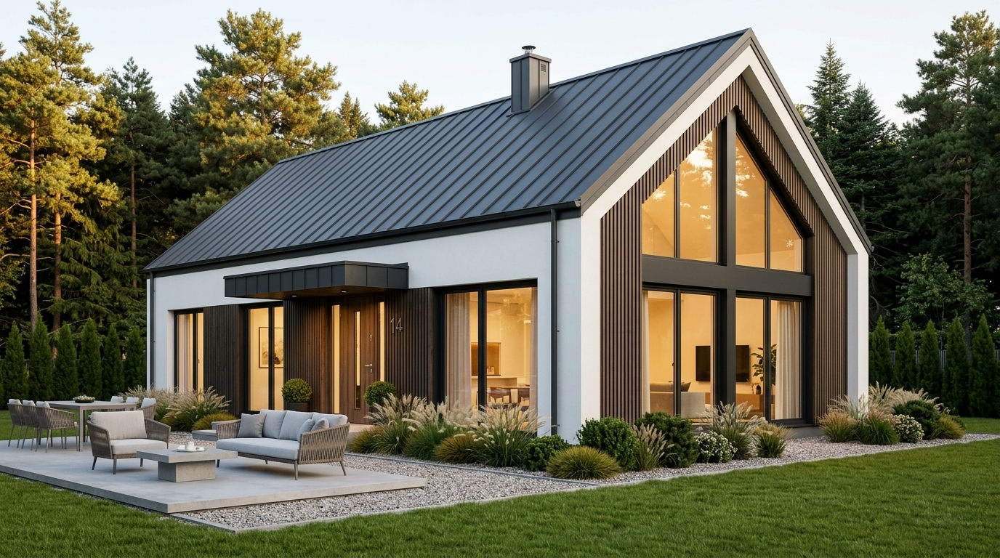
Projekt nowoczesnej stodoły (modern barn) to odpowiedź na rosnące zapotrzebowanie inwestorów na ponadczasową architekturę, która łączy tradycyjną archetypiczną bryłę z bezkompromisowo współczesnym detalem. Budynek zaprojektowano z myślą o malowniczej działce w otoczeniu lasu sosnowego, z maksymalnym otwarciem strefy dziennej na otaczający krajobraz.
Sercem domu jest imponujący salon o podwójnej wysokości z otwartą więźbą dachową i w pełni przeszkloną ścianą szczytową. Trójkątne doświetlenie górne w połączeniu z wielkoformatowymi przesuwnymi drzwiami tarasowymi HS wpuszcza do wnętrza naturalne światło słoneczne przez cały dzień, zacierając granicę między wnętrzem a ogrodem.
Elewacja budynku to starannie przemyślana kompozycja materiałów: gładki biały tynk mineralny kontrastuje z ciemnymi, pionowymi lamelami z drewna naturalnego oraz grafitową blachą dachową łączoną na rąbek stojący w systemie bezokapowym. Wejście do domu zaakcentowano płaskim zadaszeniem ze zintegrowanym oświetleniem liniowym LED.
Projekt spełnia rygorystyczne wytyczne warunków technicznych WT 2021 dzięki zastosowaniu powietrznej pompy ciepła, wentylacji mechanicznej z odzyskiem ciepła (rekuperacja) oraz zoptymalizowanej orientacji pasywnej.
Czysta, bezokapowa bryła o kącie nachylenia dachu 40° z antracytową blachą na rąbek i minimalistycznym detalem ukrytych rynien.
Pełnowymiarowe przeszklenie fasadowe z drzwiami podnoszono-przesuwnymi HS otwierającymi salon na betonowy taras i sosnowy las.
Ciepły montaż stolarki 3-szybowej, ogrzewanie płaszczyznowe zasilane inwerterową pompą ciepła oraz rekuperacja ze sprawnością powyżej 90%.
Trwałe pionowe listwy elewacyjne z drewna modrzewiowego, tynk silikonowy samoczyszczący oraz podjazdy z kruszywa łamanego i płyt betonowych.
Szerokokątne ujęcie elewacji szczytowej z panoramicznym przeszkleniem, tarasem wypoczynkowym i zadbanym trawnikiem.
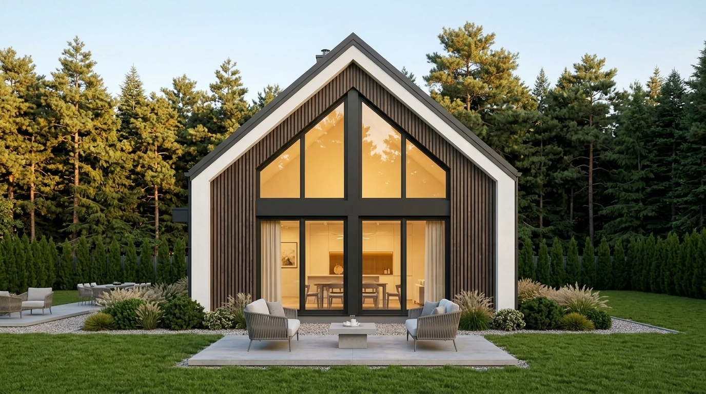
Symetryczny kadr ukazujący geometrię dachu dwuspadowego, trójkątne przeszklenie szczytu oraz strefę wypoczynkową.
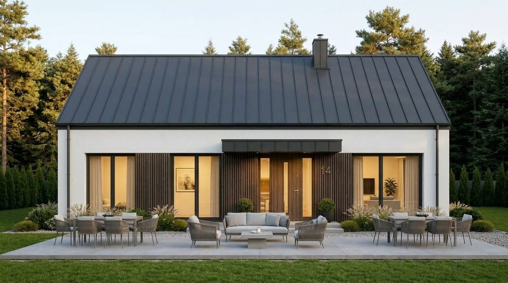
Pełne ujęcie boczne przedstawiające zadaszone skrzydło wejściowe, rytm pionowych lameli i połać dachu na rąbek.
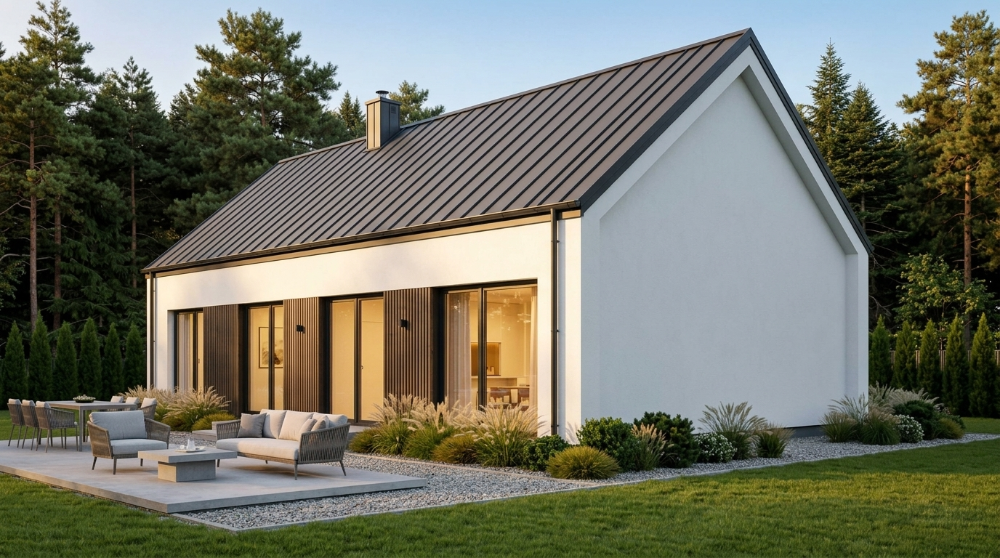
Ujęcie z przeciwległego narożnika ukazujące tylną ścianę szczytową, opaskę żwirową i kompozycję z zielenią leśną.
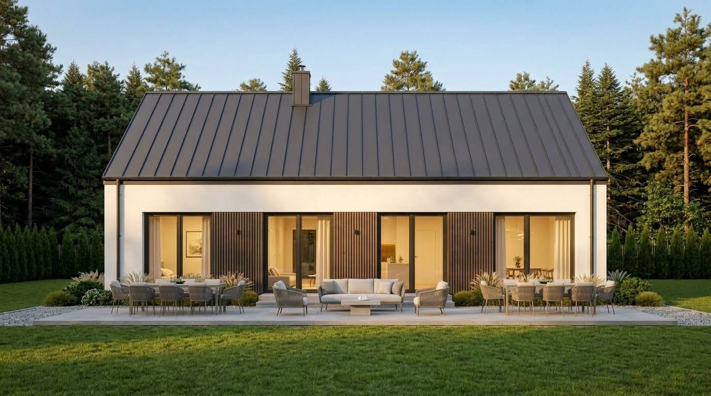
Centrowany widok na tylny szczyt budynku, ukazujący dyskretne przeszklenia sypialni oraz geometrię komina systemowego.
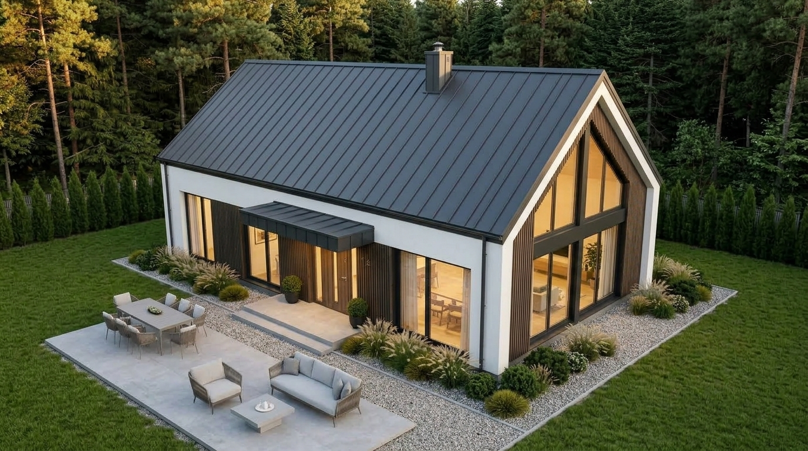
Perspektywa z drona ukazująca układ połaci dachowych, układ tarasu z meblami oraz wkomponowanie domu w leśną działkę.
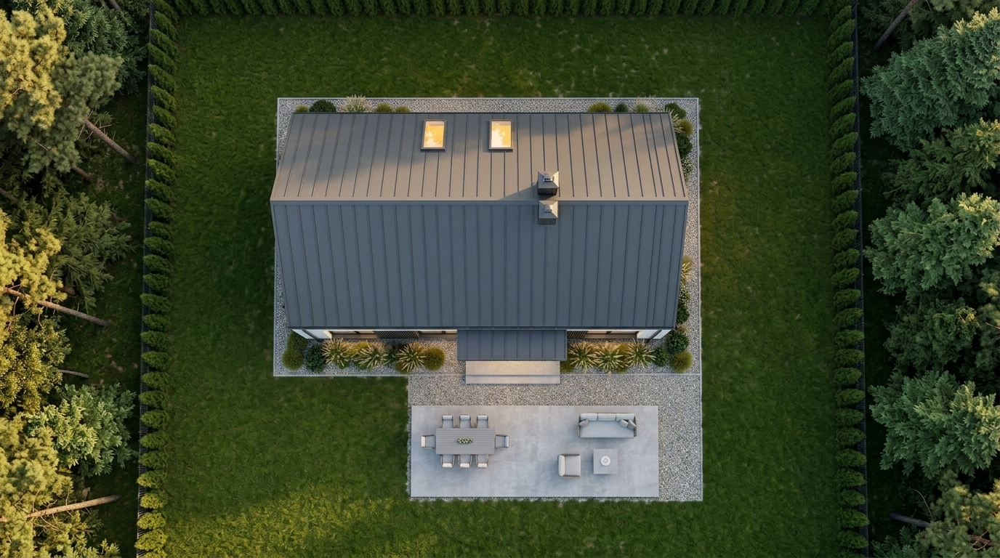
Pionowe ujęcie top-down przedstawiające kalenicę dachu, geometrię zadaszenia, nawierzchnie utwardzone oraz strefy zieleni.
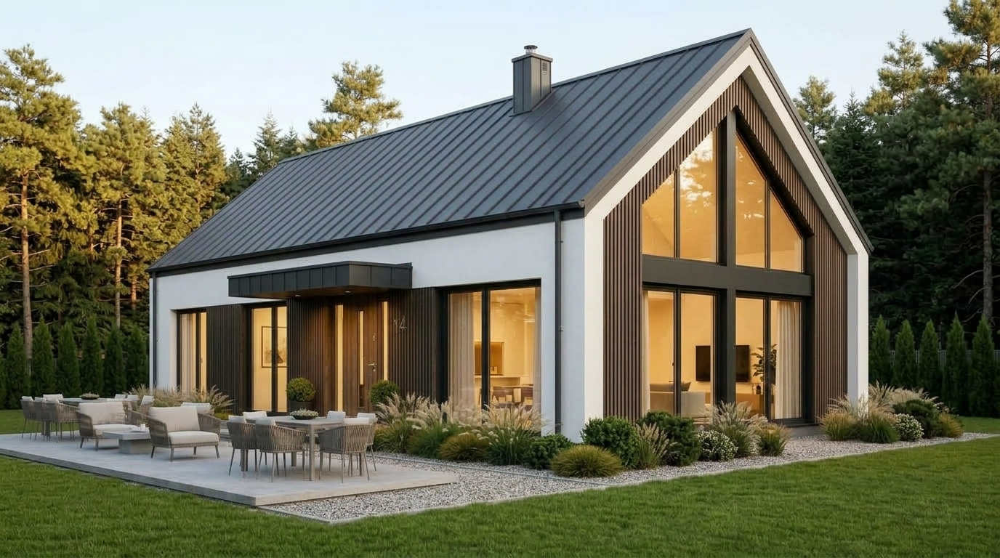
Dramatyczna perspektywa z poziomu trawy akcentująca wysokość kalenicy, ostry kąt dachu i strzelistość szklanej ściany.
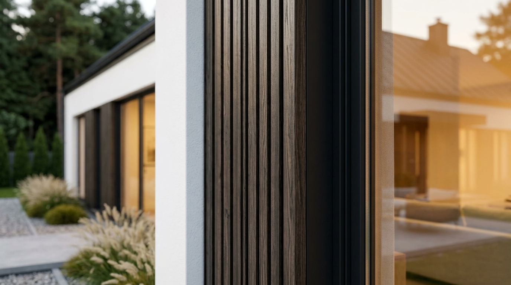
Materiały z bliska: styk pionowych lameli drewnianych z gładkim białym tynkiem, aluminiowe ramy okienne i obróbki blacharskie.
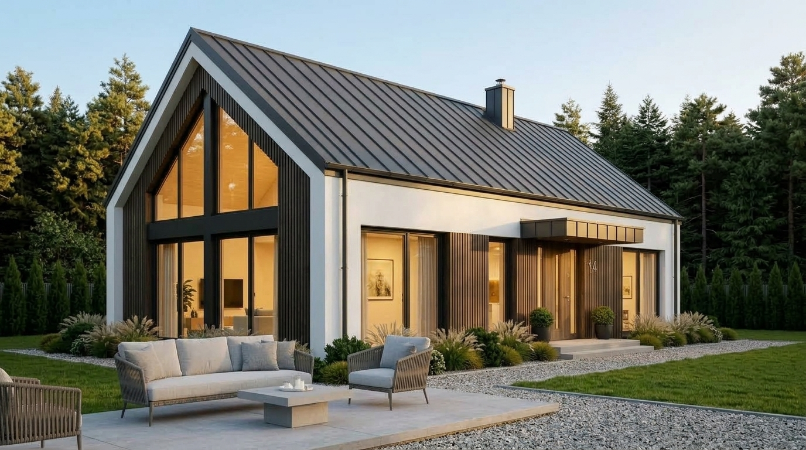
Ujęcie z poziomu betonowego tarasu: narożny zestaw wypoczynkowy, stół jadalny, widok na sosny w złotym świetle popołudniowym.
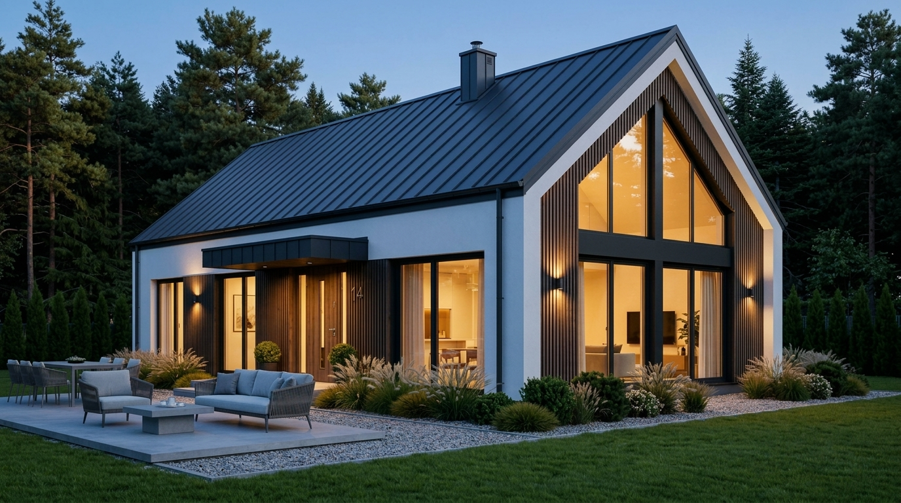
Klimatyczny kadr o zmierzchu: ciepłe światło wnętrza sączące się przez wielkie tafle szkła, oświetlenie elewacyjne i ogrodowe.
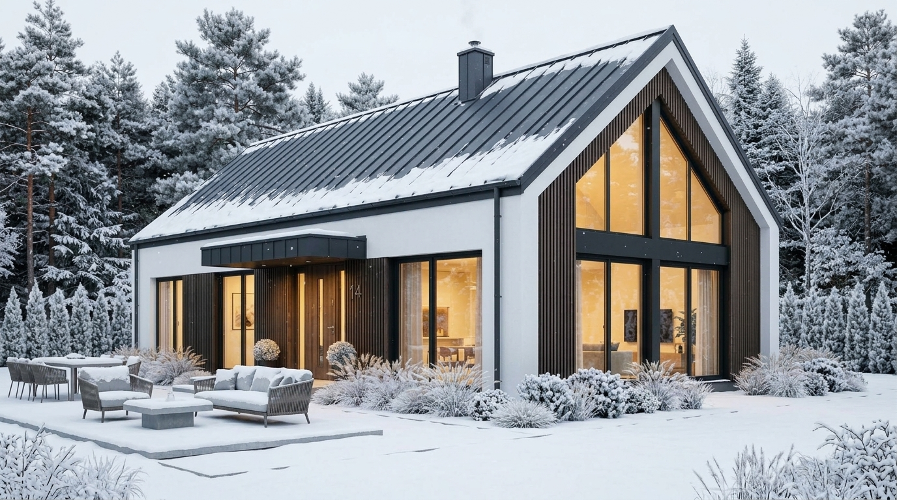
Nowoczesna stodoła w zimowym krajobrazie: ośnieżone sosny, czapa śnieżna na krawędziach dachu i ciepłe światło bijące ze środka.
Skonsultuj założenia architektoniczne, ukształtowanie działki i zapisy planu miejscowego (MPZP / WZ) bezpośrednio z głównym projektantem GOPROJECT.